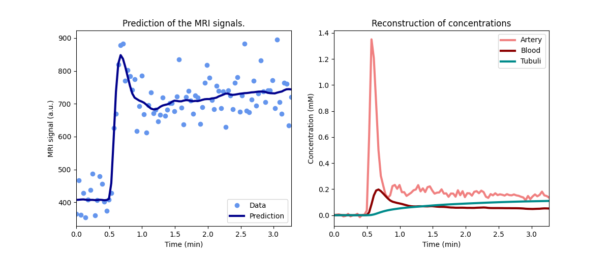

Note
Go to the end to download the full example code.
Single-kidney glomerular filtration rate#
This example illustrates the use of Kidney for measurement of
single-kidney glomerular filtration rate (SK-GFR).
The script uses data from a validation study comparing MRI-derived measurement of SK-GFR against reference measurements performed with radio-isotopes (Basak et al 2018). The study used 124 historical datasets collected in between the years 2000 and 2010 at 1 Tesla and 3 Tesla MRI.
The study was funded by Kidney Research UK.
Reference
Basak S, Buckley DL, Chrysochou C, Banerji A, Vassallo D, Odudu A, Kalra PA, Sourbron SP. Analytical validation of single-kidney glomerular filtration rate and split renal function as measured with magnetic resonance renography. Magn Reson Imaging. 2019 Jun;59:53-60. doi: 10.1016/j.mri.2019.03.005. [URL].
Setup#
Model definition#
In order to avoid some repetition in this script, we define a function that returns a trained model for a single dataset:
def kidney_model(roi, par, kidney):
# Get B0 and precontrast T1
B0 = par['field_strength']
T1 = par[kidney+' T1'] if kidney+' T1' in par else dc.T1(B0, 'kidney')
# Define tissue model
model = dc.Kidney(
# Configuration
aif = roi['aorta'],
t = roi['time'],
# General parameters
field_strength = B0,
agent = par['agent'],
t0 = roi['time'][par['n0']],
# Sequence parameters
TR = par['TR'],
FA = par['FA'],
# Tissue parameters
vol = par[kidney+' vol'],
R10 = 1/T1,
R10a = 1/dc.T1(B0, 'blood'),
)
# Customize free parameter ranges
model.set_free(
pop = 'Ta',
Tt = [30, np.inf],
)
# Train the kidney model on the data
xdata = roi['time']
ydata = roi[kidney]
model.train(xdata, ydata)
return xdata, ydata, model
Check model fit#
Before running the full analysis on all cases, lets illustrate the results by fitting the left kidney of the first subject:
Plot the results to check that the model has fitted the data:
Print the measured model parameters and any derived parameters and check that standard deviations of measured parameters are small relative to the value, indicating that the parameters are measured reliably:
model.print_params(round_to=3)
--------------------------------
Free parameters with their stdev
--------------------------------
Plasma flow (Fp): 0.019 (0.002) mL/sec/cm3
Plasma volume (vp): 0.221 (0.029) mL/cm3
Filtration fraction (FF): 0.179 (0.052)
Tubular mean transit time (Tt): 183.212 (101.263) sec
----------------------------
Fixed and derived parameters
----------------------------
Tissue B1-correction factor (B1corr): 1
Arterial B1-correction factor (B1corr_a): 1
Arterial precontrast R1 (R10a): 0.614 Hz
Arterial mean transit time (Ta): 0 sec
Blood flow (Fb): 0.034 mL/sec/cm3
Tubular flow (Ft): 0.003 mL/sec/cm3
Plasma mean transit time (Tp): 9.947 sec
Vascular mean transit time (Tv): 11.728 sec
Extraction fraction (E): 0.152
Glomerular filtration rate (GFR): 0.454 mL/sec
Renal blood flow (RBF): 4.609 mL/sec
Renal plasma flow (RPF): 2.535 mL/sec
The measured SK-GFR for this kidney (0.43) is somewhat higher than the radio-isotope reference value (0.28):
print('-----------------------------')
print('Comparison to reference value')
print('-----------------------------')
print('Radio-isotope SK-GFR: ', pars['001']['pre']['LK iso-SK-GFR'])
-----------------------------
Comparison to reference value
-----------------------------
Radio-isotope SK-GFR: 0.350666667
Fit all data#
Now that we have illustrated an individual result in some detail, we proceed to determine SK-GFR for all datasets:
results = []
for subj in rois.keys():
for visit in rois[subj].keys():
for kidney in ['LK', 'RK']:
roi = rois[subj][visit]
par = pars[subj][visit]
if kidney not in roi:
continue
xdata, ydata, model = kidney_model(roi, par, kidney)
# Export parameters and add reference value
params = model.export_params()
params['iso-SK-GFR'] = [
'Isotope single-kidney GFR',
par[kidney + ' iso-SK-GFR'],
'mL/sec',
0,
]
# Convert to a dataframe
df = pd.DataFrame.from_dict(
params,
orient = 'index',
columns = ["name", "value", "unit", "stdev"])
df['subject'] = subj
df['kidney'] = kidney
df['visit'] = visit
df['parameter'] = df.index
df['B0'] = par['field_strength']
# Append to results
results.append(df)
# Combine all results into a single dataframe
results = pd.concat(results).reset_index(drop=True)
Plot MRI values and reference values
# Validation
v1T = pd.pivot_table(results[results.B0==1], values='value', columns='parameter', index=['subject','kidney','visit'])
v3T = pd.pivot_table(results[results.B0==3], values='value', columns='parameter', index=['subject','kidney','visit'])
iso1T, iso3T = 60*v1T['iso-SK-GFR'].values, 60*v3T['iso-SK-GFR'].values
mri1T, mri3T = 60*v1T['GFR'].values, 60*v3T['GFR'].values
plt.title('Single-kidney GFR (SK-GFR)')
plt.plot(iso1T, mri1T, 'bo', linestyle='None', markersize=4, label='1T')
plt.plot(iso3T, mri3T, 'ro', linestyle='None', markersize=4, label='3T')
plt.plot(iso3T, iso3T, linestyle='-', color='black')
plt.ylabel("MRI SK-GFR (mL/min)")
plt.xlabel("Isotope SK-GFR (mL/min)")
#plt.xlim(0,100)
#plt.ylim(0,200)
plt.legend()
plt.show()
Compute bias and accuracy
v = pd.pivot_table(results, values='value', columns='parameter', index=['subject','kidney','visit'])
iso = 60*v['iso-SK-GFR'].values
mri = 60*v['GFR'].values
diff = mri-iso
bias = round(np.mean(diff),0)
err = round(1.96*np.std(diff),0)
bias_err = round(1.96*np.std(diff)/np.sqrt(np.size(diff)),0)
print('-----------------')
print('Single-kidney GFR')
print('-----------------')
print(f"The bias in an MRI-based SK-GFR measurement is {bias} +/- {bias_err} ml/min") # paper 0.56
print(f"After bias correction, the error on an SK-GFR measurement is +/- {err} mL/min") # paper [-28, 29]
-----------------
Single-kidney GFR
-----------------
The bias in an MRI-based SK-GFR measurement is 11.0 +/- 3.0 ml/min
After bias correction, the error on an SK-GFR measurement is +/- 50.0 mL/min
The results confirm the conclusion from the original study that the precision of MR-derived SK-GFR with these historical data was too low for clinical use. The exact numerical values are different from those in the original study, showing the importance of implementation detail.
Total running time of the script: (0 minutes 8.432 seconds)